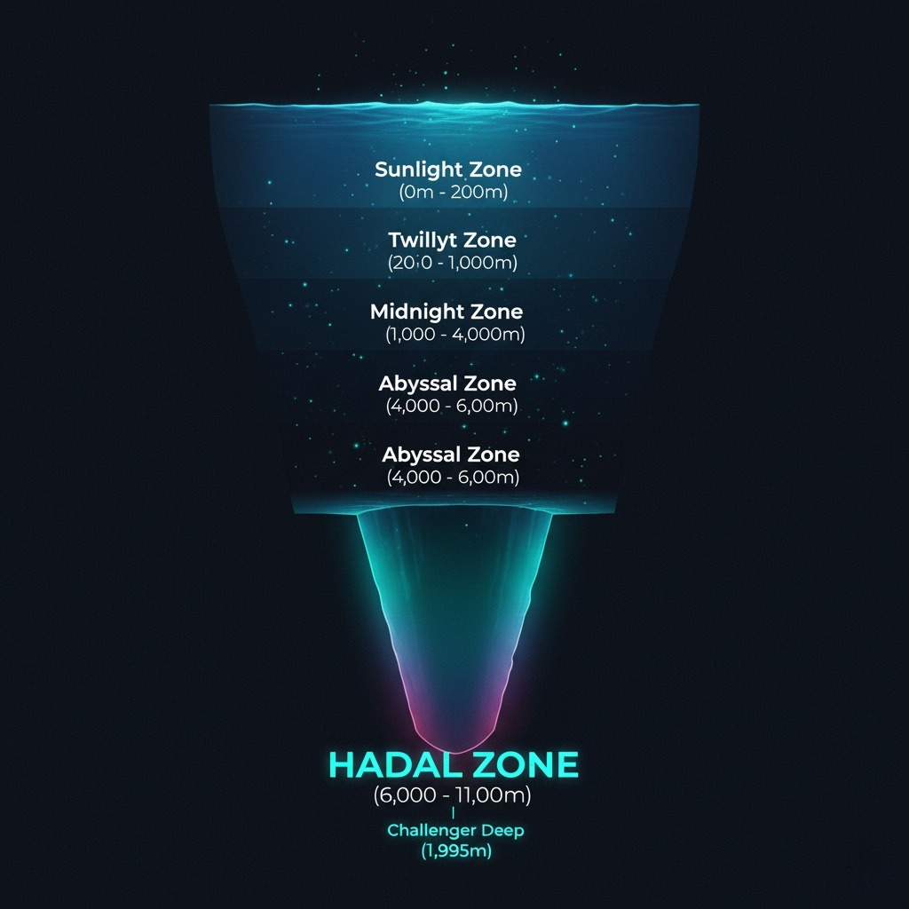

Welcome to the Underworld
The Hadal Zone is the deepest region of the ocean, a series of isolated trenches and troughs extending from 6,000m(20,000ft) to the very bottom of the planet. Named for Hades, the Greek god of the underworld, it is a realm of eternal darkness, crushing pressure, and freezing cold. Fewer people have visited its depths than have walked the moon. This is the last true frontier on Earth.
